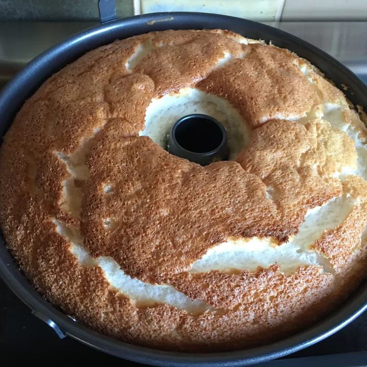

Angel Food Cake

Decription
This classic dessert is light bodied, not too rich, and goes great with strawberries and whipped cream.
Ingredients
- 1 cup cake flour
- 1 1/2 cups white sugar, divided
- 12 egg whites
- 1 1/2 teaspoons vanilla extract
- 1 1/2 teaspoons cream of tartar
- 1/2 teaspoon salt